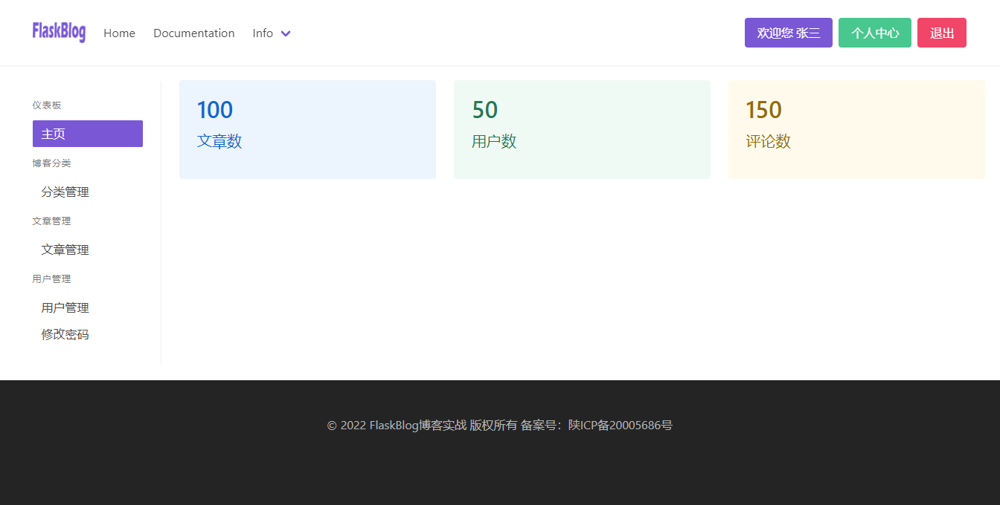

创建后台管理应用
Flask与django最大的不同就在这里，django的理念是快速开发，所以他尽可能多的帮我们集成了所有web的功能，包括了一个强大的admin后台管理系统！
而Flask倡导的是自由度，因此无论大小的系统，只要牵扯到数据管理的增删改查的地方都要我们手动去实现，当然Flask也有对应的第三方扩展，但本教程更多的是让大家熟悉Flask，而不是学习扩展，所以我们不回去用第三方扩展来实现这里的功能！
创建后台管理应用admin
在app/目录下创建一个admin/模块目录，与blog和auth模块的目录结构一致，也就是我们所说的应用！目录结构如下：
app/
admin/
__init__.py
forms.py
models.py
views.py
templates/
static/
创建各功能视图
创建admin主页视图
在app/admin/views.py中创建如下代码
from unicodedata import name
from flask import Blueprint, flash, redirect, render_template, request, url_for
from ..auth.views.auth import login_required
from RealProject import db
bp = Blueprint('admin', __name__, url_prefix='/admin',
template_folder='templates', static_folder='static')
@bp.route('/')
@login_required
def index():
# 主页视图
return render_template('admin/index.html')
在app/admin/templates/admin/目录下创建index.html
{% extends 'base.html' %}
{% block title %}
{{ g.user['username'] }}-个人中心
{% endblock title %}
{% block hero %}{% endblock hero %}
{% block box %}
<div class="columns">
<div class="column is-2">
<div class="card is-shadowless" style="border-right:solid 1px #eee">
<div class="card-content">
<aside class="menu">
<p class="menu-label">
仪表板
</p>
<ul class="menu-list">
<li><a class="{% if request.path == '/admin/' %}is-active{% endif %}"
href="{{ url_for('admin.index') }}">主页</a></li>
<!-- <li><a>Customers</a></li> -->
</ul>
<p class="menu-label">
博客分类
</p>
<ul class="menu-list">
<li><a href="">分类管理</a></li>
</ul>
<p class="menu-label">
文章管理
</p>
<ul class="menu-list">
<li><a href="">文章管理</a></li>
</ul>
<p class="menu-label">
用户管理
</p>
<ul class="menu-list">
<li><a>用户管理</a></li>
<li><a>修改密码</a></li>
</ul>
</aside>
</div>
</div>
</div>
<div class="column">
{% block member %}
<div class="tile is-ancestor">
<div class="tile is-parent">
<article class="tile is-child notification is-info is-light">
<div class="content">
<p class="title">100</p>
<p class="subtitle">文章数</p>
<div class="content">
<!-- Content -->
</div>
</div>
</article>
</div>
<div class="tile is-parent">
<article class="tile is-child notification is-success is-light">
<div class="content">
<p class="title">50</p>
<p class="subtitle">用户数</p>
<div class="content">
<!-- Content -->
</div>
</div>
</article>
</div>
<div class="tile is-parent">
<article class="tile is-child notification is-warning is-light">
<div class="content">
<p class="title">150</p>
<p class="subtitle">评论数</p>
<div class="content">
<!-- Content -->
</div>
</div>
</article>
</div>
</div>
{% endblock member %}
</div>
</div>
{% endblock box %}
最后，别忘了在项目目录RealProject/init.py中注册该管理后台的蓝图
def register_bp(app:Flask):
# 注册视图方法
from app.blog import views as blog
from app.auth import views as auth
# 管理后台视图
from app.admin import views as admin
app.register_blueprint(blog.bp)
app.register_blueprint(auth.bp)
# 注册管理后台的蓝图
app.register_blueprint(admin.bp)
app.add_url_rule(rule='/', endpoint='index', view_func=blog.index)
至此，我们的管理后台主页以及大的框架就搭建完成，下一章节我们将通过分类管理的增删改查来学习如何深度的利用Flask-WTF及Flask-sqlalchemy两个扩展实现我们的基本业务需求！
最终效果展示
管理后台我们将大概分类为如下几个：
- 主页 
- 分类管理


- 文章管理
- 草稿箱
- 用户管理
那么，最终的几个页面基本上都与这几个布局和样式一致，尽可能的以最简单的代码和最明了的逻辑处理我们的业务，这一部分我们目前不考虑权限的问题，到最后我们再统一处理权限！